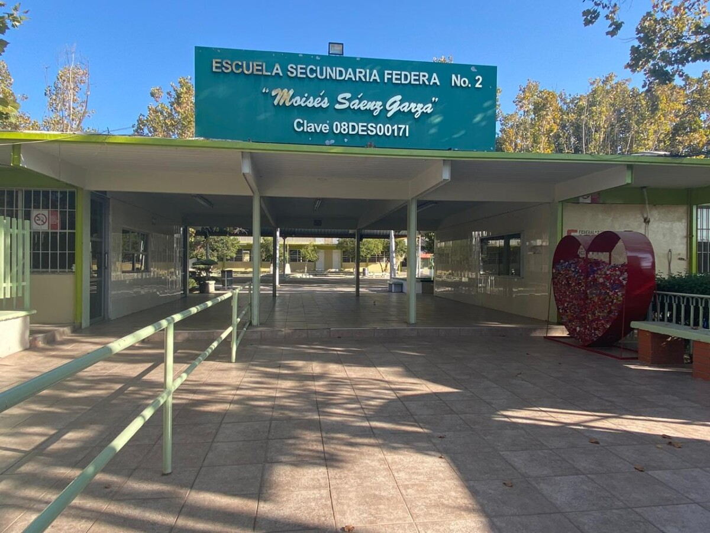
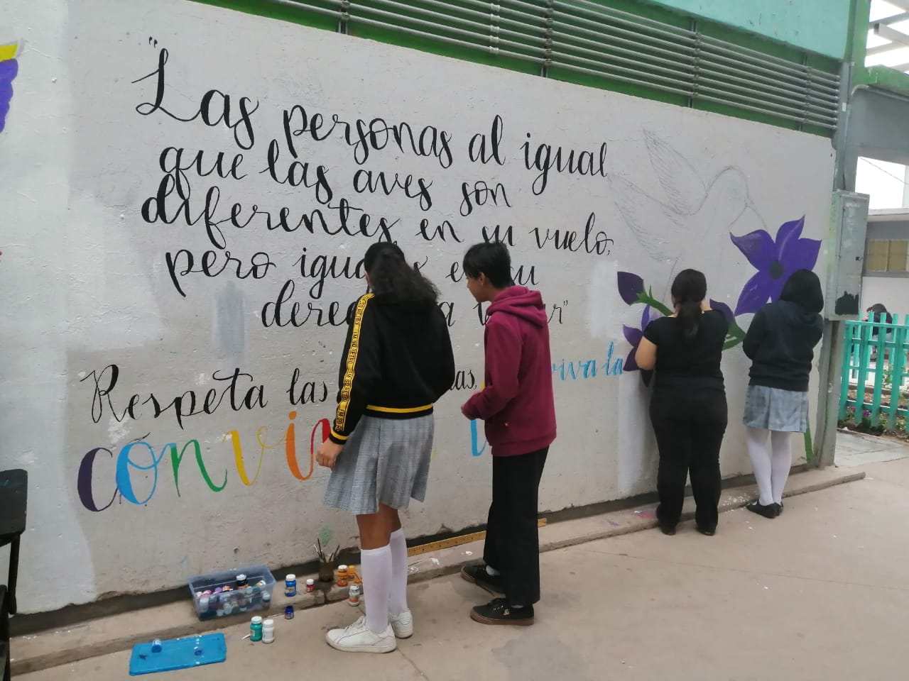
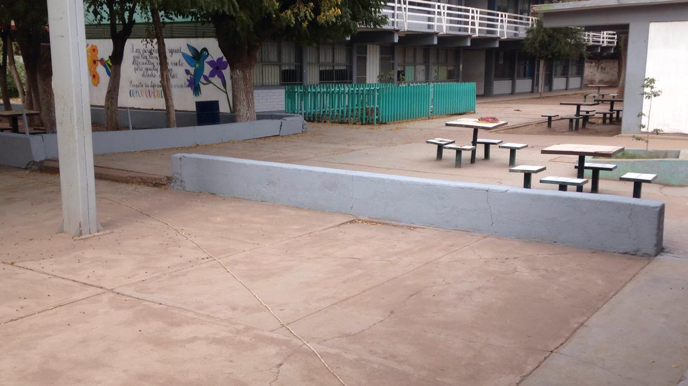
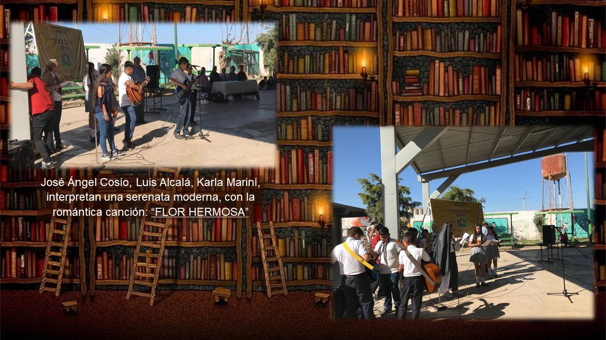
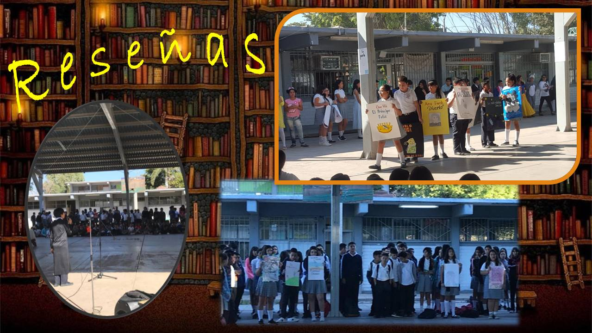
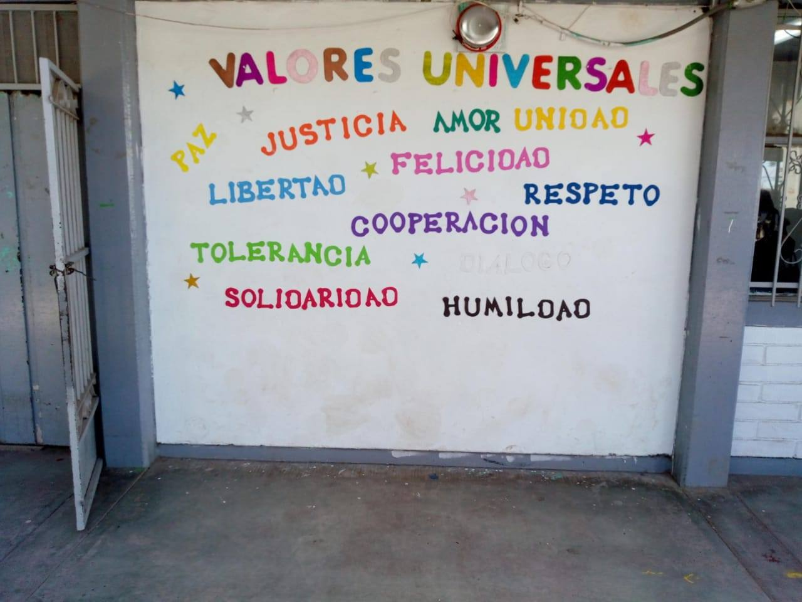
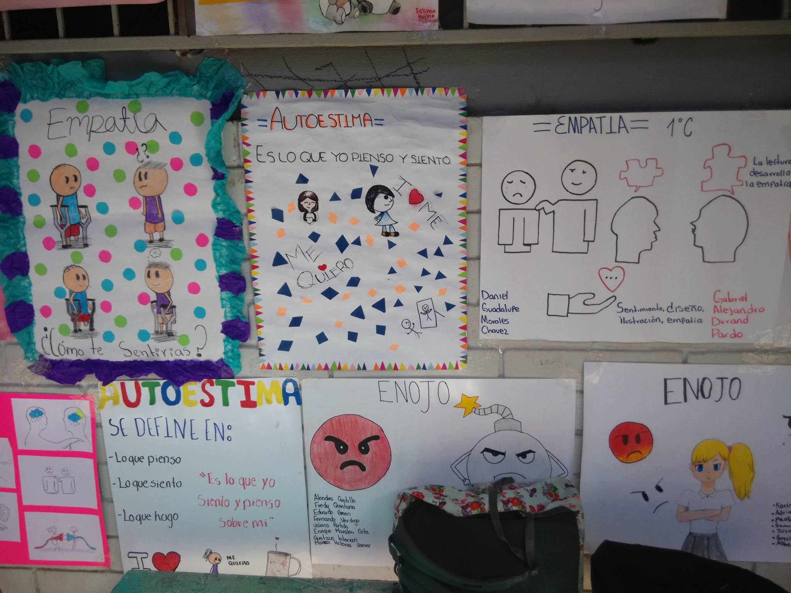
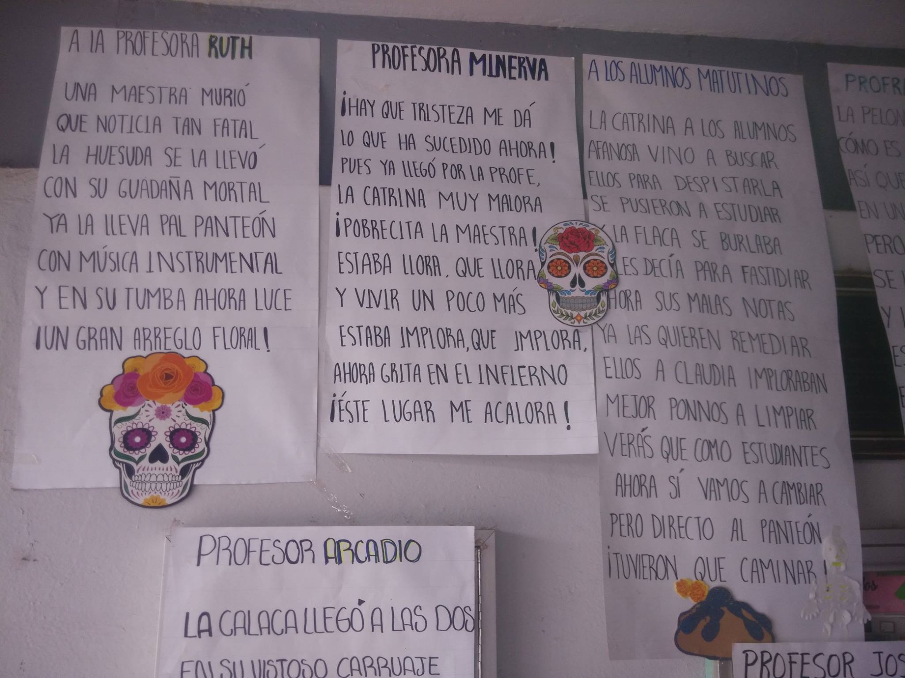
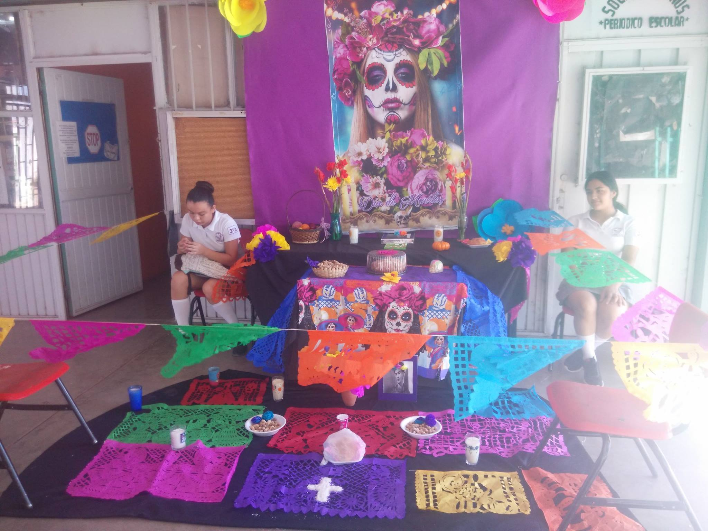

Bienvenidos a esta pagina donde encontraras información acerca de la secundaria General No.2 "Moises Saenz", aqui encontraras la dirección, correo de contacto, el objetivo de la escuela etc. Ademas de los talleres con los que cuenta la institución
| Escuela Secundaria |
|
| Objetivo: |
| Desarrollar y consolidar hábitos de diciplina, estudio y trabajo individual y en equipo como condición necesaria para una realización eficazde la tareas del aprendizaje |
| Dirección: |
| Calle Cuauhtémoc s/n, Calle Lic Benito Juárez García esquina
Ciudad Obregón |
| Correo: |
| atanaelvl@gmail.com |


En esta Institución tambien cuentan con diferentes talleres que los talleres permiten mejorar el nivel educativo y de atención de los alumnos.
| Talleres que ofrece la institución: |
| TALLERES |
En la escuela tambien se realizaban muchos eventos como el dia del libro, dia de muertos, la feria de la convivencia, etc.
|
| Dia del Libro |
 |
 |
| Feria de la convivencia |
 |
 |
| Dia de Muertos |
 |
 |
 Galindo Sauceda Rosa María
Galindo Sauceda Rosa María